1. Dữ liệu & làm sạch (NASA thật)
File gốc Apache Common Log Format (gzip), parse bằng Spark trên cluster, ghi Parquet phân vùng
dt/hour. Simulator sinh thêm 1.065.283 dòng có nhãn (4 loại tấn công) để đánh giá định lượng.
| Chỉ số | Giá trị |
|---|---|
| Tổng số dòng đọc | 1.891.715 |
| Vào silver | 1.891.709 |
| Loại: dòng bị cắt cụt (malformed_line) | 1 |
| Loại: request rác (malformed_request) | 5 |
| Dòng trùng tuyệt đối (giữ lại) | 835 |
| Thiếu bytes (“-”) → 0 | 19.721 |
| Request HTTP/0.9 (không có protocol) | 3.732 |
| Request không nhất quán (path có dấu cách / rác) | 974 |
| Số host khác nhau (xấp xỉ) | 79.433 |
| Khoảng thời gian (UTC) | 1995-07-01T04:00:01 → 1995-07-28T17:32:25 |
2. Khám phá dữ liệu
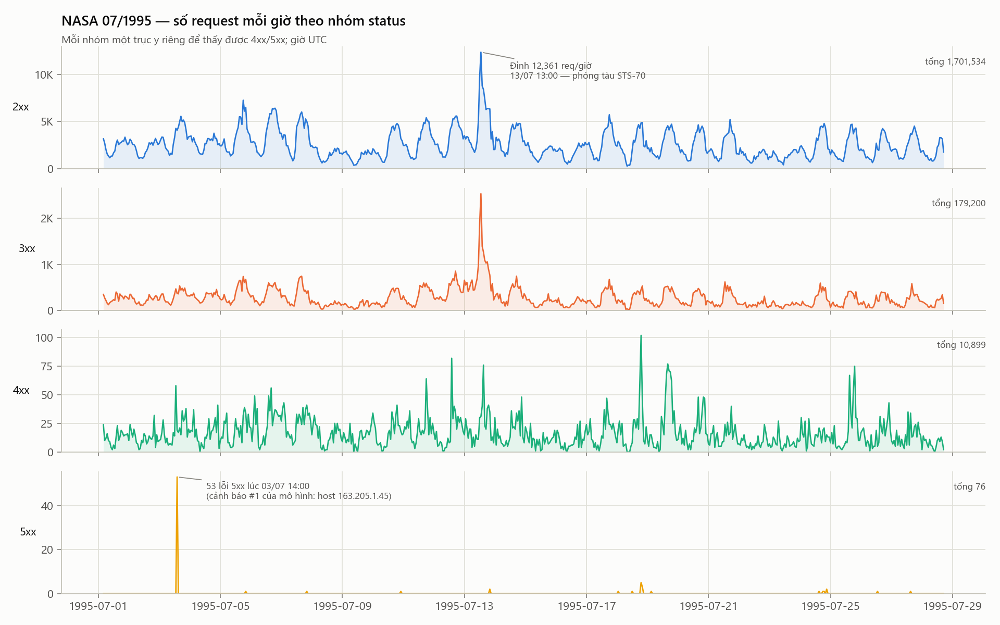
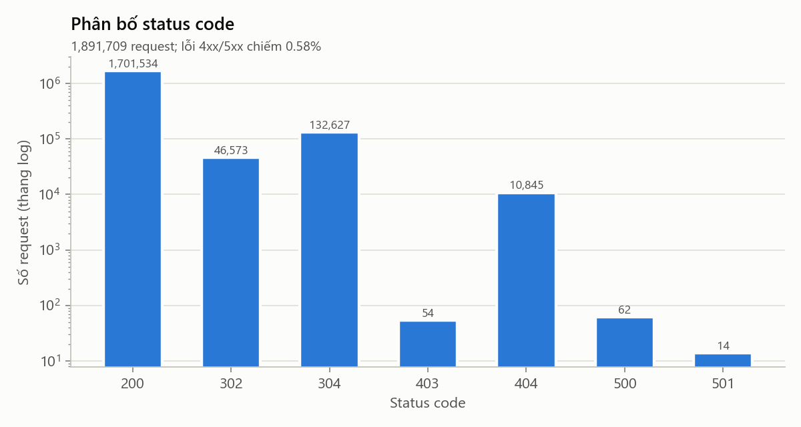
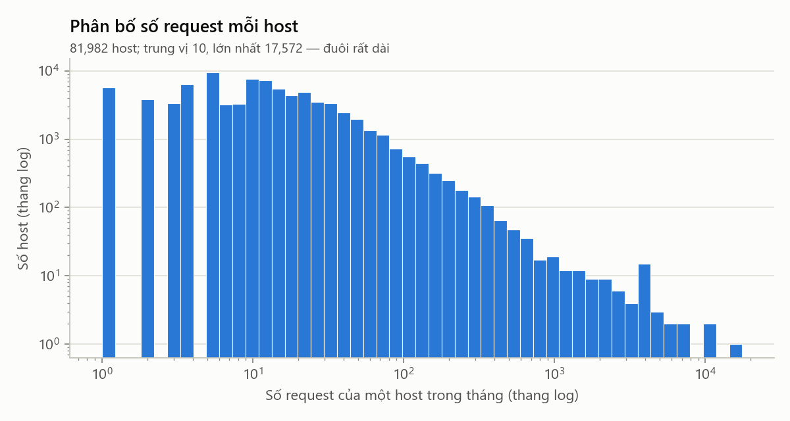
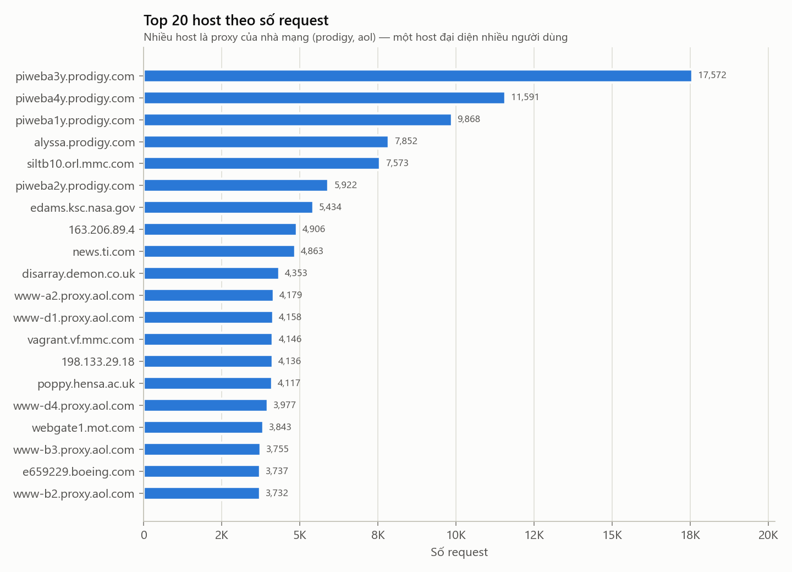
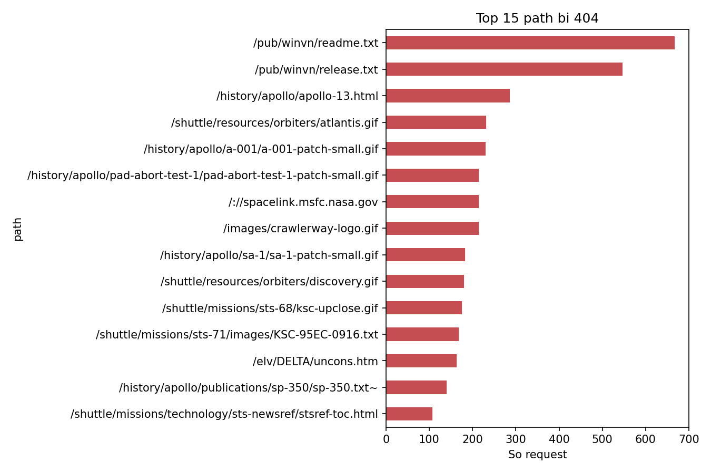
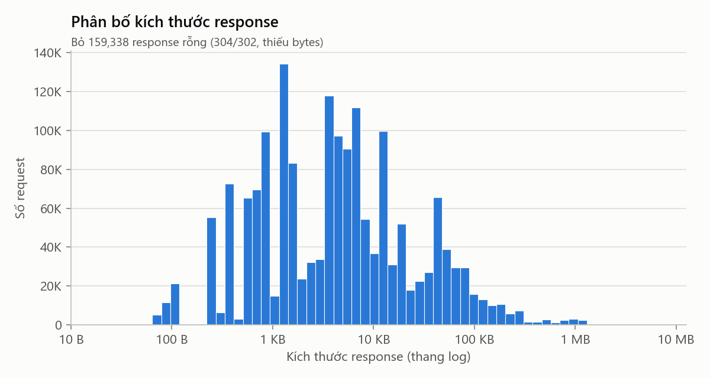
3. Mô hình: KMeans + CBLOF
Feature theo cửa sổ IP × 5 phút. KMeans gom các cửa sổ thành nhóm hành vi. CBLOF chấm điểm: cửa sổ thuộc cụm nhỏ được đo khoảng cách tới tâm cụm lớn (bình thường) gần nhất. Ngưỡng = phân vị 99 điểm trên tập train, không dùng nhãn. Đánh giá trên 30% thời gian cuối (tập test).
Bảng so sánh (tập test simulator)
| Phương pháp | k | Precision | Recall | F1 | PR-AUC | FPR | Recall brute_force | Recall sqli | Recall scan | Recall ddos |
|---|---|---|---|---|---|---|---|---|---|---|
| Rule (ngưỡng viết tay) | – | 1,000 | 0,368 | 0,538 | – | 0,0000 | 0,90 | 1,00 | 1,00 | 0,34 |
| KMeans + CBLOF · core model demo | 2 | 0,720 | 0,998 | 0,836 | 0,998 | 0,0031 | 1,00 | 0,90 | 1,00 | 1,00 |
| KMeans (tâm cụm được gán) · core | 2 | 0,221 | 0,211 | 0,216 | 0,157 | 0,0060 | 1,00 | 0,90 | 1,00 | 0,17 |
| BisectingKMeans + CBLOF · core | 2 | 0,752 | 0,998 | 0,858 | 0,998 | 0,0027 | 1,00 | 0,90 | 1,00 | 1,00 |
| KMeans + CBLOF · extended | 2 | 0,751 | 0,998 | 0,857 | 0,998 | 0,0027 | 1,00 | 0,90 | 1,00 | 1,00 |
| BisectingKMeans + CBLOF · extended | 2 | 0,736 | 0,998 | 0,848 | 0,998 | 0,0029 | 1,00 | 0,90 | 1,00 | 1,00 |
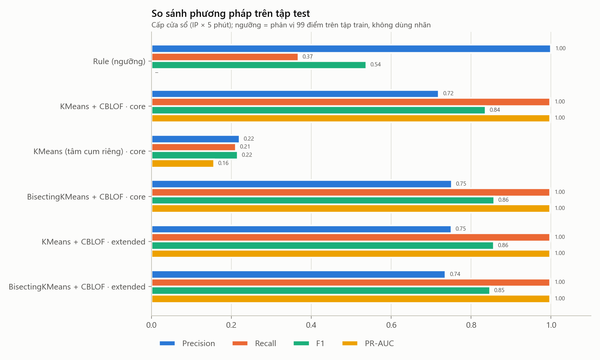
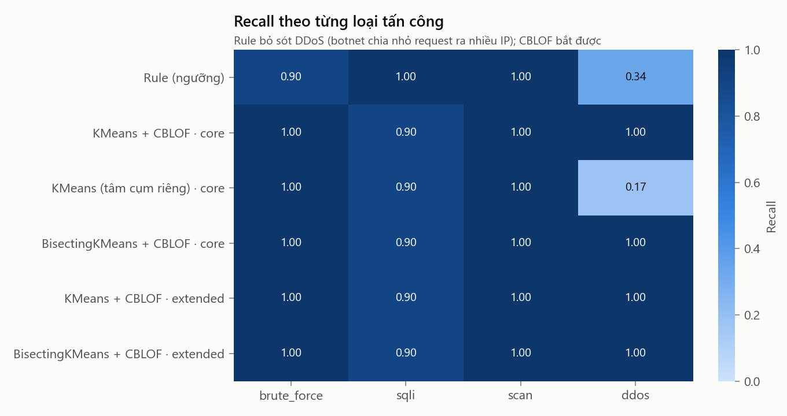
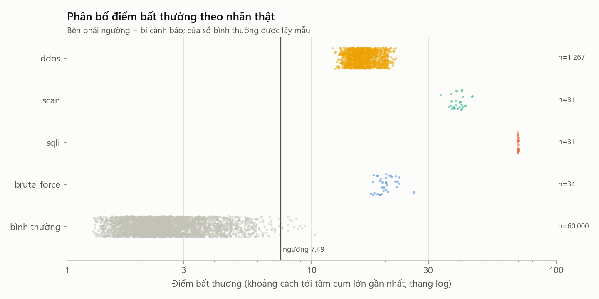
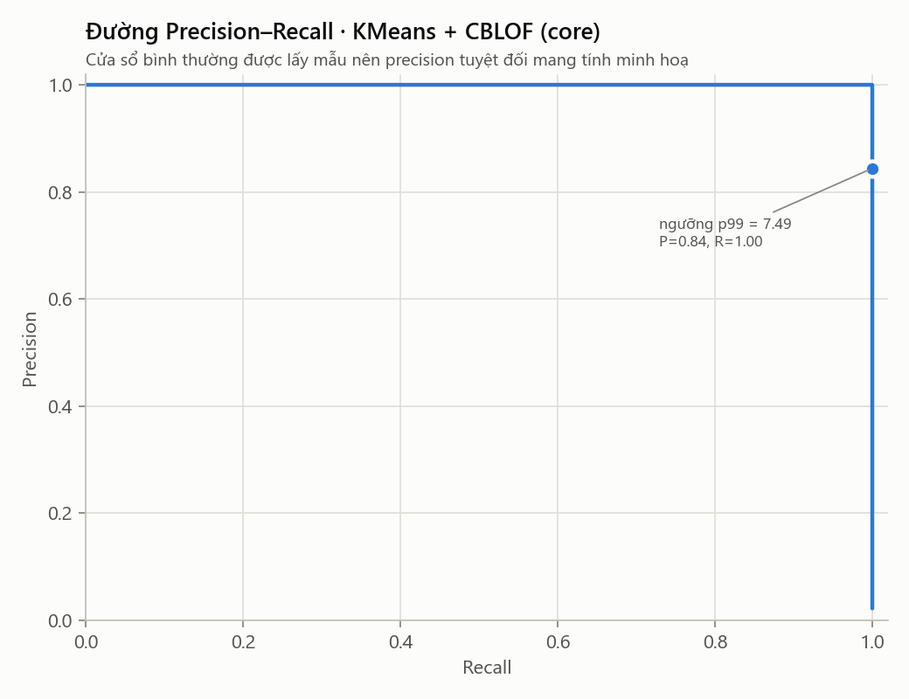
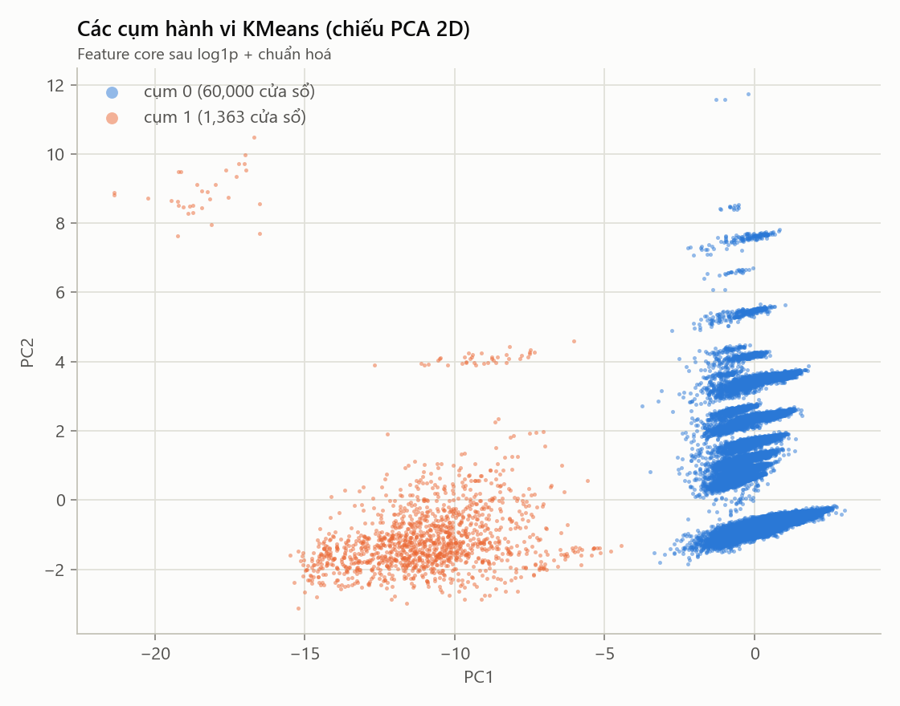
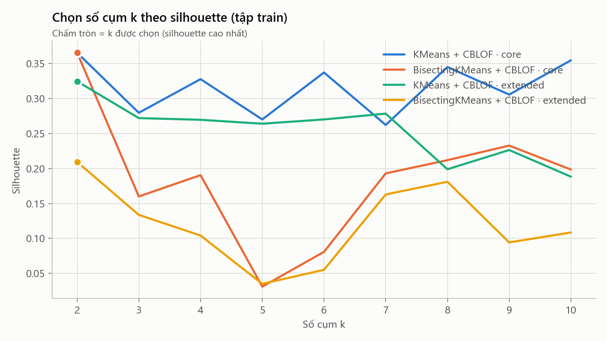
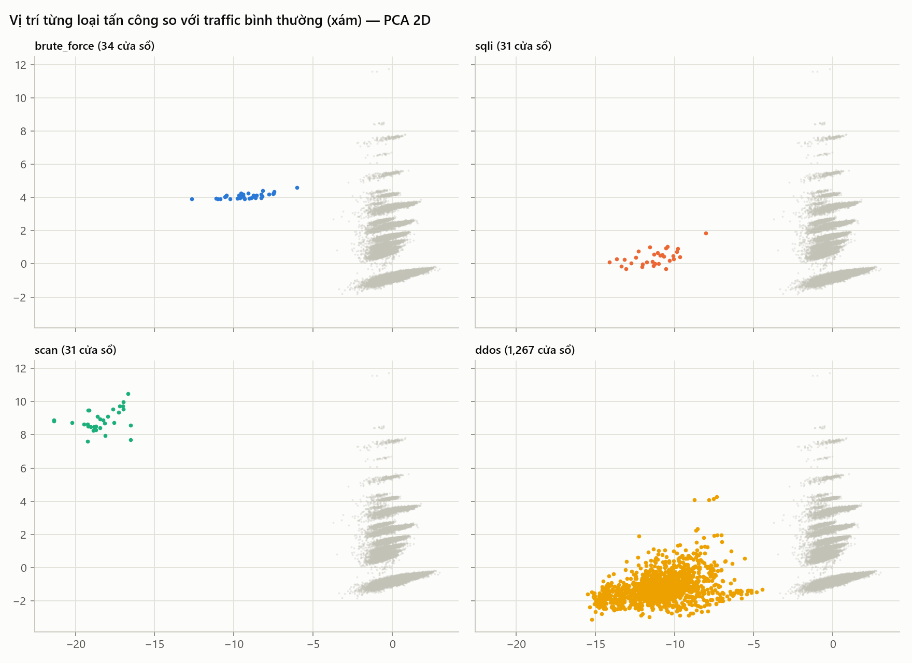
Các cụm hành vi trên simulator
| Cụm | Số cửa sổ | TB request | burst_rate | Số path | Tỉ lệ 4xx | Tỉ lệ 404 | Tỉ lệ file tĩnh | Tỉ lệ tấn công (nhãn thật) |
|---|---|---|---|---|---|---|---|---|
| 0 | 173.049 | 5,4 | 0,44 | 5,0 | 0,06 | 0,06 | 0,10 | 0,00 |
| 1 | 1.363 | 21,2 | 2,31 | 19,5 | 0,28 | 0,02 | 0,00 | 1,00 |
4. Áp dụng lên NASA thật
Không có nhãn, nên đánh giá định tính. KMeans chọn k = 3;
có 2.487 cửa sổ vượt ngưỡng. Cảnh báo số 1 (host 163.205.1.45, 03/07) trùng
với đỉnh lỗi 5xx trên biểu đồ EDA.
Các cụm hành vi
| Cụm | Số cửa sổ | TB request | burst_rate | Số path | Tỉ lệ 4xx | Tỉ lệ 404 | Tỉ lệ file tĩnh |
|---|---|---|---|---|---|---|---|
| 0 | 199.002 | 7,6 | 0,12 | 7,1 | 0,00 | 0,00 | 0,56 |
| 1 | 1.215 | 6,8 | 0,10 | 5,5 | 0,53 | 0,53 | 0,33 |
| 2 | 39.667 | 5,2 | 1,06 | 5,1 | 0,00 | 0,00 | 0,79 |
20 cửa sổ bất thường nhất
| Host | Cửa sổ (UTC) | Request | Điểm | Mức | Lý do (feature lệch nhất) | Rule |
|---|---|---|---|---|---|---|
| 163.205.1.45 | 1995-07-03 14:50 | 35 | 320,7 | high | ratio_5xx | – |
| piweba4y.prodigy.com | 1995-07-28 01:35 | 4 | 293,5 | high | ratio_sus_path | suspicious_path |
| sun1.who.ch | 1995-07-23 22:15 | 3 | 259,3 | high | ratio_sus_path | suspicious_path |
| 163.205.1.45 | 1995-07-03 14:55 | 32 | 257,8 | high | ratio_5xx | – |
| 192.83.171.94 | 1995-07-18 01:45 | 3 | 226,6 | high | ratio_post | – |
| dffl6-32.gate.net | 1995-07-24 21:05 | 3 | 186,3 | high | ratio_post | – |
| 163.205.1.45 | 1995-07-03 14:40 | 8 | 174,7 | high | ratio_post | – |
| asimov | 1995-07-25 15:40 | 4 | 139,8 | high | ratio_post | – |
| 138.13.123.172 | 1995-07-06 22:10 | 3 | 130,1 | high | ratio_sus_path | suspicious_path |
| 198.122.135.40 | 1995-07-25 21:55 | 3 | 129,7 | high | ratio_sus_path | suspicious_path |
| firnvx.firn.edu | 1995-07-22 04:15 | 3 | 129,7 | high | ratio_sus_path | suspicious_path |
| titan02 | 1995-07-18 20:05 | 3 | 129,1 | high | ratio_5xx | – |
| 163.205.1.45 | 1995-07-03 14:45 | 18 | 126,4 | high | ratio_post | – |
| 134.57.9.77 | 1995-07-24 21:55 | 4 | 119,3 | high | ratio_5xx | – |
| firnvx.firn.edu | 1995-07-22 04:35 | 4 | 97,3 | high | ratio_sus_path | – |
| abcworks.demon.co.uk | 1995-07-07 14:20 | 4 | 97,2 | high | ratio_sus_path | – |
| line159.nwm.mindlink.net | 1995-07-12 05:25 | 3 | 95,5 | high | ratio_post | – |
| 149.25.97.54 | 1995-07-11 23:35 | 3 | 93,8 | high | ratio_post | – |
| 147.150.105.17 | 1995-07-14 13:45 | 6 | 93,7 | high | ratio_post | – |
| 192.112.239.115 | 1995-07-27 14:45 | 6 | 93,2 | high | ratio_post | – |
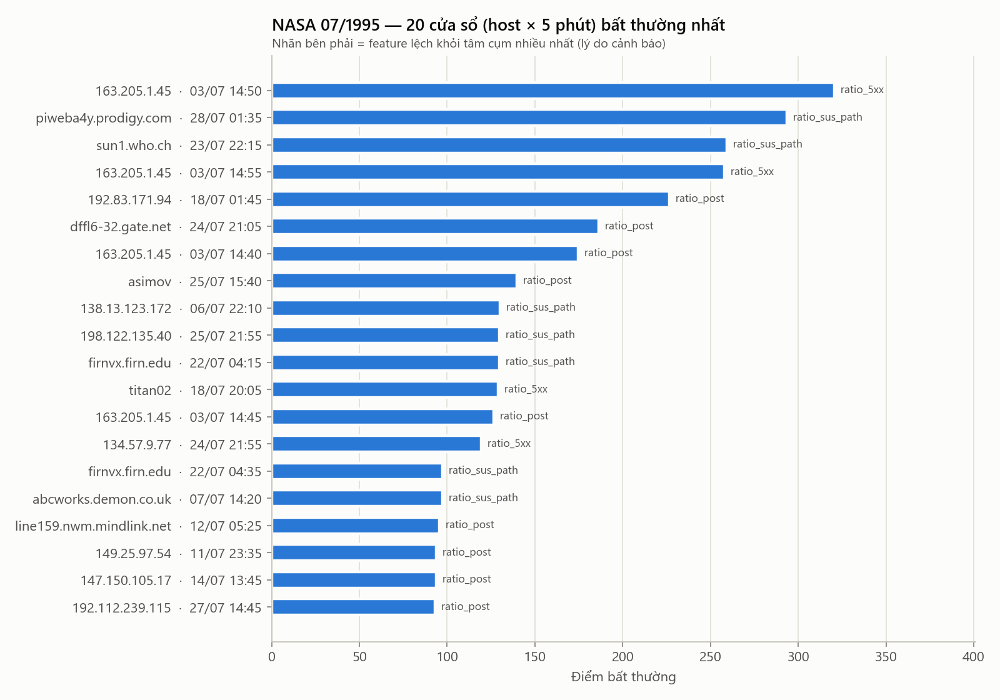